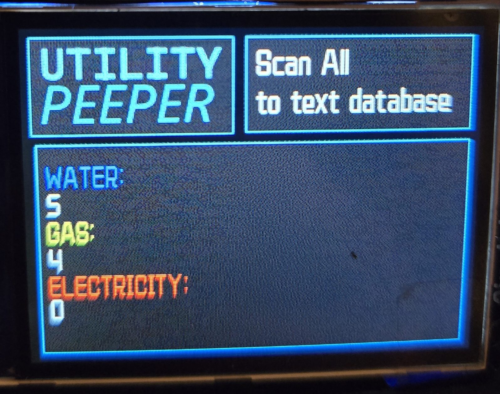
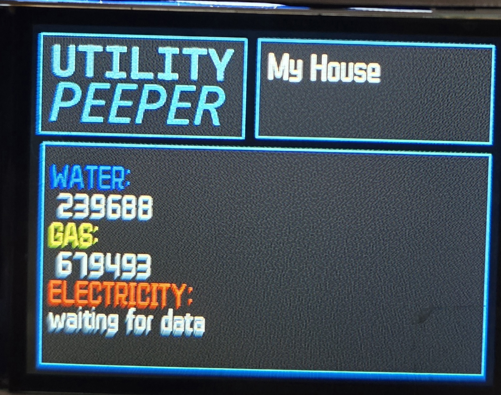
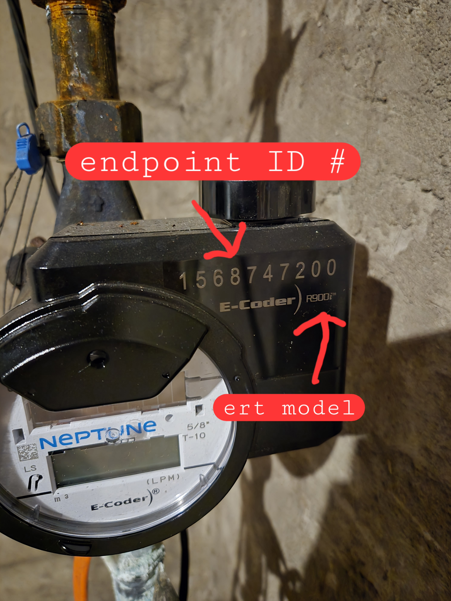
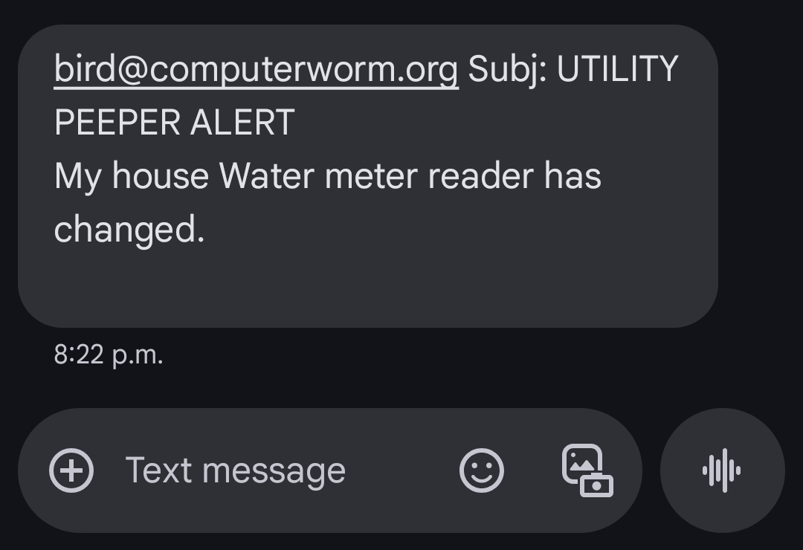

ZENITH-Worm
June 17, 2025
Utility Peeper

This is a utlitiy meter reading program I've built. It works by utilizing an rtl-sdr dongle to scan the 900 MHz range where Canadas radio broadcasting Commision have banished utility meters to broadcast at. It then uses an rtlamr signal decoding program I scooped off of github github repo and then sends that data to a text file I have set up. I messed around a lot trying to pipe the stdout data directly from running the rtlamr program as a subprocess [in python] but couldn't for the life of me get it to work properly. So this was my solution, which as usual when it comes to my code, is akin to how I imagine an orc would program. Dirty, inefficient, brute strength. Kinda like a monkey smashing on the keyboard until something finally works. But it definetly gets the job done.

Specifically, the meters I am interested in reading are the ones in my home which are as follow:
| Utility | ert | model | freq. | period |
|---|---|---|---|---|
| WATER | Neptune | r900i | 902 - 928 MHz | 14 seconds |
| GAS | Itron | 100g H/H | 902 - 928 MHz | 14 seconds |
| ELECTRIC | GE | ???? | ???? | ???? |
Selecting a 'mode' pretty much just adds various filters ive programmed in. For example 2. filters out for only my houses erts id. while selecting 1 has no filters and runs a tally, counting by meter type. I'm not sure of a practical way to display hundreds of meters on this tiny 2" LCD so I just write the data to a seperate text file. I could program in some sort of scrolling bar/multiple pages of data but it's a lot of work for a feature I will never use lol. Mode 3 and 4 are probably temporary as well, just copy and pasted the code for my house and changed the filter id #'s so I can show it off to my coworkers. Anyways heres a blank screen that I use as a backdrop to print the read results to [pulled out of the text file and drawn on each frame of this gif using the python PIL module]

And heres what that looks like filled in with some data. LEFT: [mode 1. Scan All] -- scans for any signal and writes the data to a .txt file, counts/catagorizes the meter type  ERT endpoint identification is pretty straight forward. Each ert/amr has a barcode and corrosponding endpoint id # located right on the radio itself. Here you can see it on both the Neptune water and the Itron gas radios.  Additionally I can also just run the decoder right on my laptop which is a lot smoother/cleaner but lets be honest it's way cooler running it on a tv remote and also on the laptop theres no beautiful User Interface lol. Also here in this screenshot
is one of what I've been calling "mystery signals". One is a gas meter and logically the other must be a GE electric, since this data was captured at my Dads acreage far away from any other meters. Strangely enough though I captured 2 distinct mystery ones along with the gas, and neither of them match up to the GE ert. Not to the erts ID or to the erts read. It's a real puzzler. What I think might be happening
is that the GE meter is encrypting the data, randomizing it in someway and my signal decoder obviously doesn't know this. It takes the random string of values and formats it like it always does so what I get is a scrambled up reading.
RIGHT: [mode 2. Scan my house] -- self explanitory//scans for signals whos endpoint id # matches my houses meters

Conclusion + Final Ramblings:
This project was mostly for the fuck of it to be honest, to see if I could. The rtl-sdr was the most expensive component of the build coming in around $70, however you could definetly get it cheaper since we are using such a narrow range. Mine is a bit overkill, able to pick up all sorts of other signals such as my local country music station.
Actually it's kind of spooky just scanning the frequencies late at night, picking up strange signals from something or other. Especially when you start getting out of the traditional AM/FM and down into the "meteorological/radionavigational/aeronautical" ranges
...static....crackle....static....ominous tone pulsing in the night, is anyone else listening??
Though me being freaked out might also be contributed by the fact it was late at night and I was full of exhilarating adrenaline of having my software finally working, paired with an overactive imagination, dreaming of hearing something top secret I was not meant to hear from some shadowy government organization no ones ever heard of
As a final note, as part of my job I do the meter reading for my small municipality and a bit ago we were looking into upgrading our official Neptune brand water meter reader. I can't recall the price we were quoted but I do remember it was ridiculously expensive. So as an alternative I reached out to Itron because we had recently purchased a new
gas meter reader. But unfortunatley they told me that no, the itron radio reciever cannot pick up the neptune erts. I find that funny how these devices they sell us for top dollar won't but a cheap usb sdr can pick them up + more just fine lol. And the signals not even encrypted!!! I could understand if neptune encrypted the signals but it's literally broadcast for anyone
to listen in to.
Though I suppose the radio is only a portion of the product we buy from them, It's also the software to handle the reads.
I've built a simple "winter watchman" into the reader in order to keep an eye on my utility consumption over winter while I'm away for holidays. It monitors gas - alerting if there is no change in 1 hour of reads [furnace had gone out]. As well as monitors water - alerting if there IS change [leak/burst pipe?]
Unfortunetly the sdr was acting sporadic with the 02w, I think perhaps the pi cannot provide enough power to the usb but I'm not convinced that thats the issue. I've had other issues with other devices ive tried on the usb as well. I ended up temporarily wiring the zenith to the pi 4 of my VHS gaming rig for testing purposes. Anyways I got a simple text alert system built for detecting changes in read values as you can see here.
I also set button 1 as a toggle for the alert system to turn it off/deactivate it.
It would be easy enough to add in a cheap >$10 DHT22 sensor and program the alert system to monitor temperature and humidity as well as utility reads. Would make for a pretty robust system, but idk if I care enough to add it in. I basically have the code written already for my vivarium project but it'd be a matter of combining the two and to be honest I'm getting a bit burnt out on this project and find myself more interested in other things as of late. Perhaps when the summer winds down I'll come back to this and improve upon it, but as for now I'm happy with what I have functioning here :].